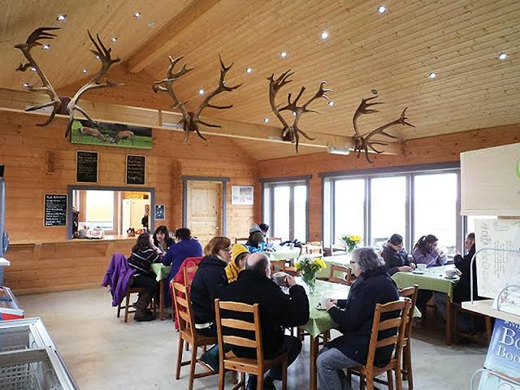

The café at Fife Farmpark is a cosy and welcoming place where visitors can relax after exploring the farm. It serves homemade sandwiches, warm soups, freshly baked cakes, and hot drinks, with many ingredients sourced from local farms. The café has large windows overlooking the animal fields, giving families a chance to watch the animals while they eat. It was opened in 2003 and has become one of the farmpark’s favourite spots for visitors.

01294 432685 Fifefarmparkcafe@gmail.com